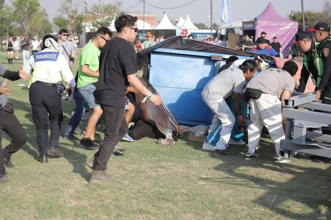
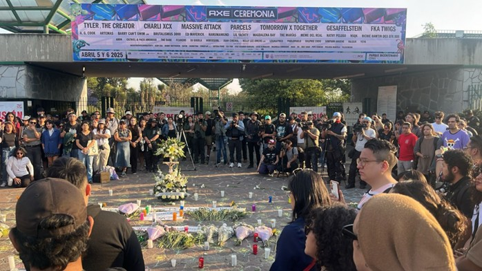

El Festival AXE Ceremonia 2025 quedó marcado por una tragedia que expuso las graves fallas estructurales, operativas y humanas de un evento que presume ser uno de los más importantes del país. La caída de una estructura decorativa a causa del viento dejó como saldo la lamentable muerte de dos fotógrafos independientes; una ola de indignación que apunta a la negligencia absoluta.

No se trata de inexperiencia, sino de decisiones motivadas por recortes presupuestarios en rubros esenciales como la protección civil. Por ahorrar unos cuantos pesos, se ponen en riesgo vidas humanas. Durante horas tras el accidente, el festival mantuvo un silencio alarmante: la música no se detuvo, la fiesta continuó mientras la mayoría permanecía ajena a la gravedad.

PRENSA: EL ESLABÓN MALTRATADO
Este tipo de tragedias sacan a la luz las condiciones precarias: empleados mal pagados, jornadas extenuantes y un trato indigno hacia la prensa. Se les invita por la cobertura, pero se les considera un mal necesario. En situaciones de emergencia, no hay protocolos para salvaguardar su integridad.

Las investigaciones ya están en curso, pero la exigencia social va más allá de buscar culpables individuales: es momento de replantear cómo operan estos grandes festivales. ¿Quién supervisa? ¿Cómo se garantizan condiciones laborales dignas? No puede volver a ocurrir.

EL FUTURO DE LOS FESTIVALES
Lo sucedido no puede quedarse como una anécdota. El alto costo de los boletos e insumos debería cubrir seguros de gastos médicos y de vida para todos los involucrados. El silencio de las marcas y organizadores es cómplice.